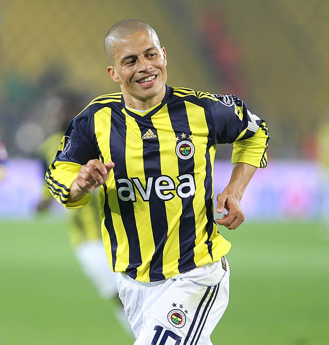
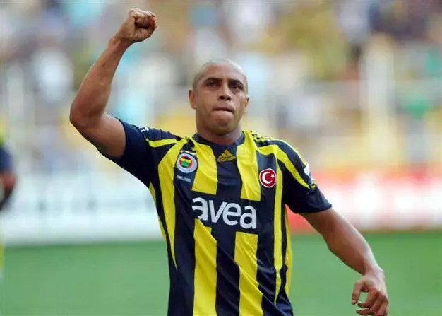

Welcome to the Fenerbahce hall of fame!
Here, we will display outstanding players and historical moments on Fenerbahce and their games!
Alexsandro de Souza
Born in Brazil, Alexsandro de Souza is often considered the greatest player in Fenerbahçe's history. He played as a midfielder for Fenerbahce from 2004 to 2012 and easily became their best player, leading the team to several Turkish Super Lig wins. Alex was mostly known for his incredible skill and countless goals.

Roberto Carlos
Born in Brazil like Alex, Roberto Carlos played for Fenerbahçe from 2007 to 2009. Even though his time playing for FB was short, Roberto Carlos really contributed to Fenerbahçe's campaigns.

Mustafa Tunc
Mustafa Tunc played for Fenerbahçe from 2003 to 2011. He is most likely one of the best strikers fenerbahce has ever had. After his futbol career was over he became a realtor.

Ozkan Huvaz
Ozkan Huvaz played for Fenerbahçe from 2002 to 2009. He was an amazing midfielder and had good connections with the other players.